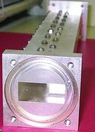
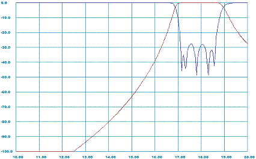

This software version is outdated. It still works at Microsoft Internet
Explorer but is not supported by other browsers and internet platforms.
Users are encouraged to migratee to the
NEW VERSION,
which is very similar but universal in respect
to Internet technologies as it retains all functions. In addition, the new version
offers new technologies, such as agressive space mapping (ASM). The current users can easily convert
their project files and transfer them into new version (see import/export options).

